Colonización Simbiótica
Una arquitectura que aprende a crecer.
La arquitectura siempre ha sido entendida como una materia inerte, un objeto terminado cuya forma permanece inalterable con el paso del tiempo. Este proyecto plantea precisamente lo contrario: una estructura capaz de evolucionar, adaptarse y crecer junto a los organismos que la habitan.
Colonización Simbiótica imagina una arquitectura donde el edificio deja de ser un límite entre naturaleza y tecnología para convertirse en un ecosistema compartido. Las algas dejan de ser un elemento añadido y pasan a formar parte de la propia construcción, modificando su comportamiento, su apariencia y su rendimiento ambiental.
El proyecto propone un edificio que respira, captura carbono, produce biomasa y transforma continuamente su propia envolvente. No se trata de diseñar una forma definitiva, sino de crear las condiciones necesarias para que la vida continúe construyéndola.

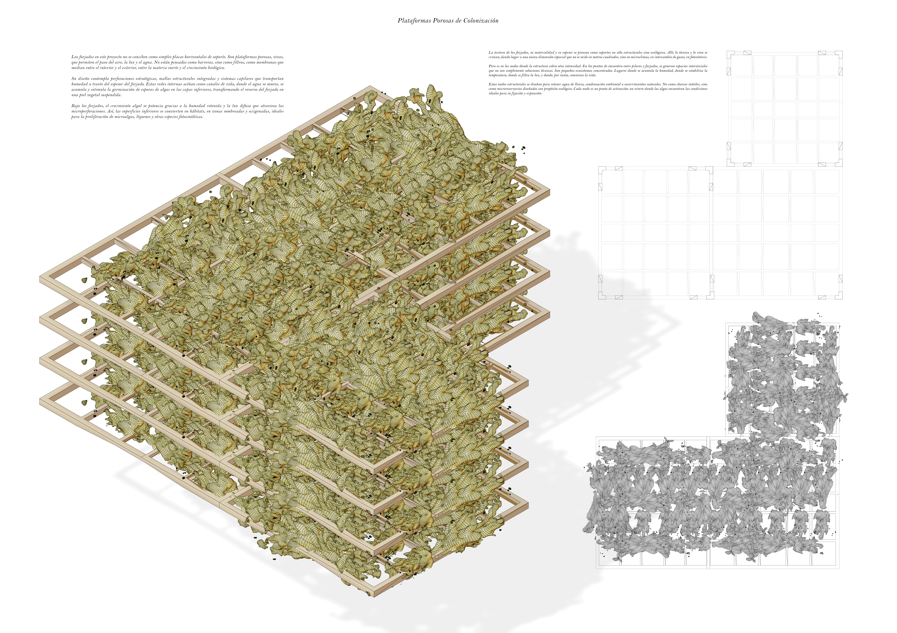
Mecanismo de crecimiento
El edificio no impone una forma sobre la naturaleza; crea una infraestructura preparada para ser colonizada. La estructura actúa como soporte, las algas como materia viva y el tiempo como el verdadero arquitecto del proyecto.
Desarrollo del organismo
Evolución cromática y biológica de la envolvente activa
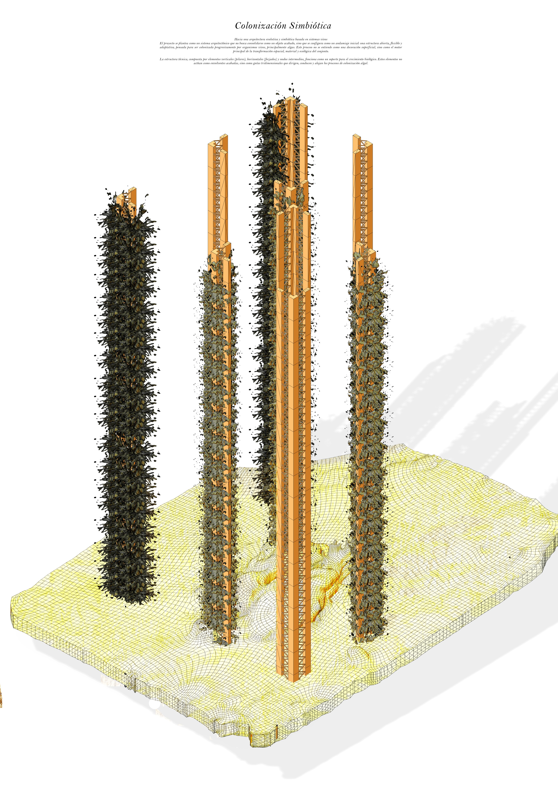
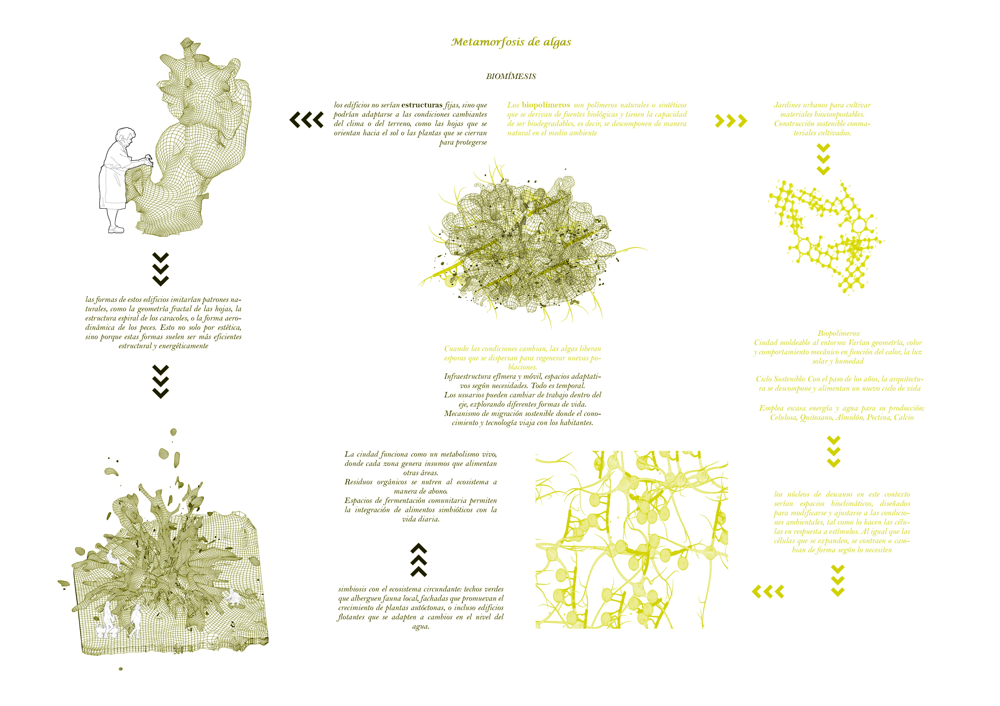
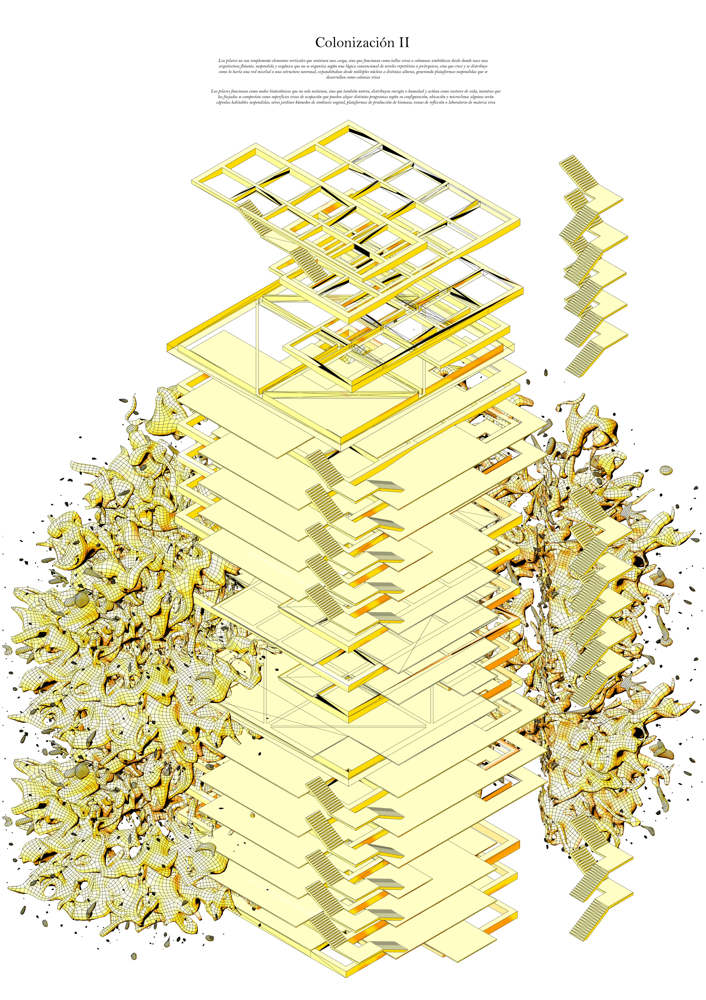
La estructura no representa el resultado final, sino el inicio de un proceso continuo de transformación. Con el paso del tiempo, la materia biológica modifica la envolvente del edificio hasta convertirla en una piel activa capaz de producir sombra, capturar carbono y regular el comportamiento ambiental del conjunto.
Implazamiento
El proyecto se implanta como una nueva infraestructura biológica dentro de la ciudad, estableciendo una relación directa entre el sistema construido y el paisaje que lo rodea.
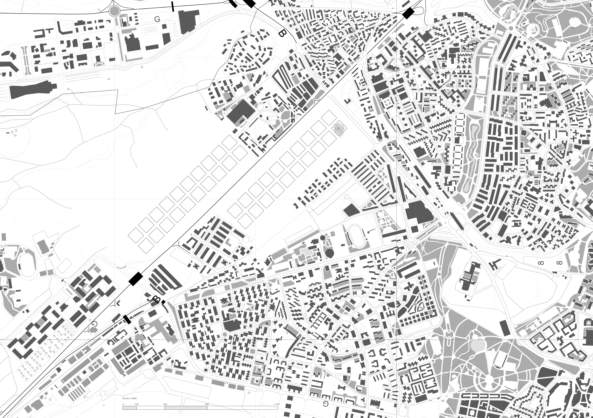
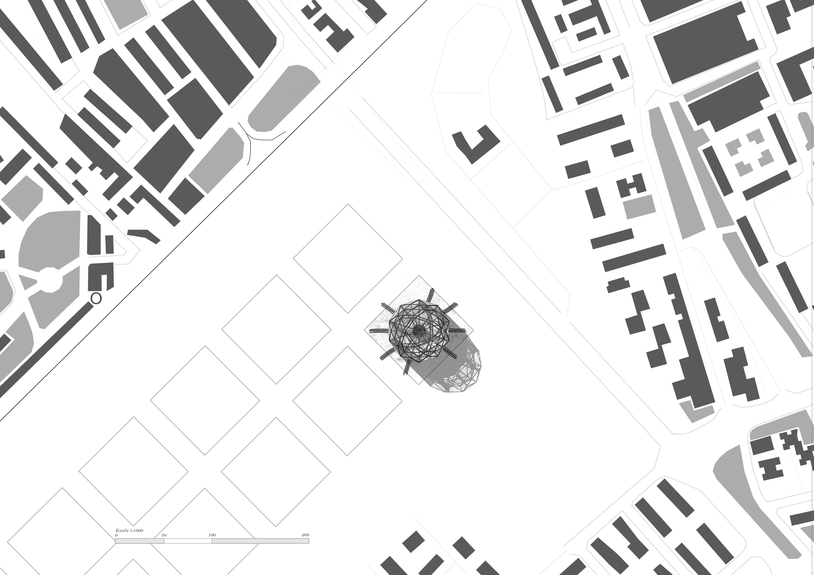
Organización espacial
Análisis programático del sistema metabólico central
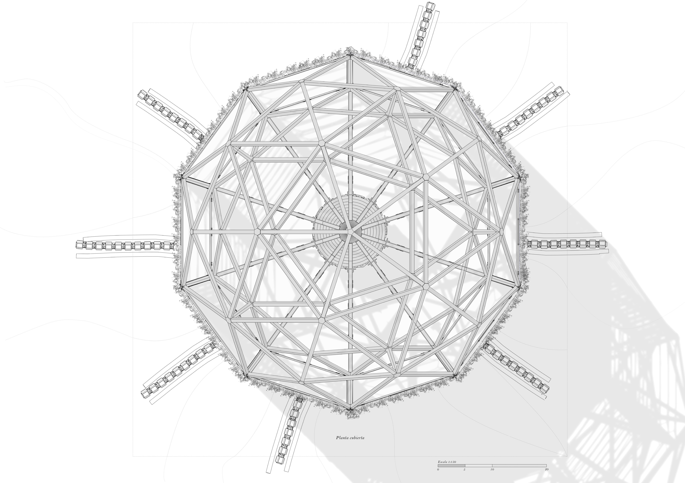
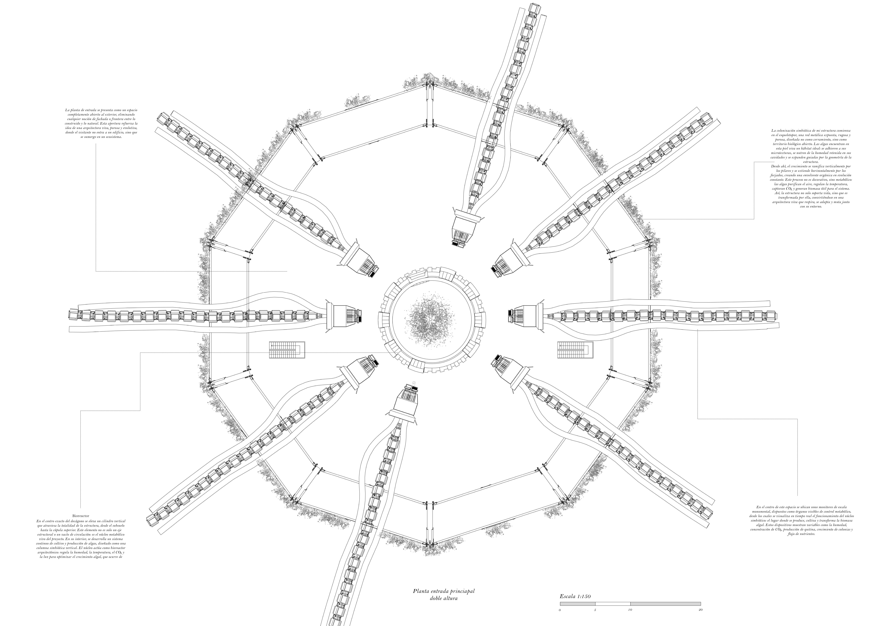


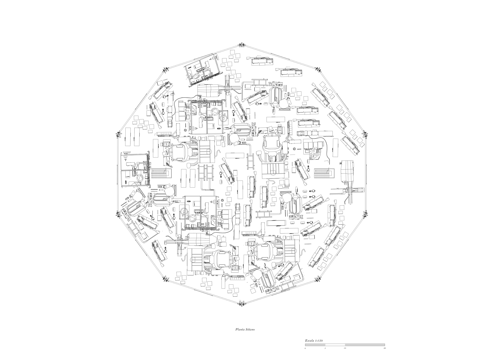
Toda la organización del edificio gira en torno a un gran núcleo biotecnológico central, donde se desarrolla el metabolismo del proyecto. Los espacios habitables se distribuyen alrededor de este vacío, permitiendo que la actividad humana conviva con los procesos biológicos que mantienen vivo el edificio.
Sistema estructural
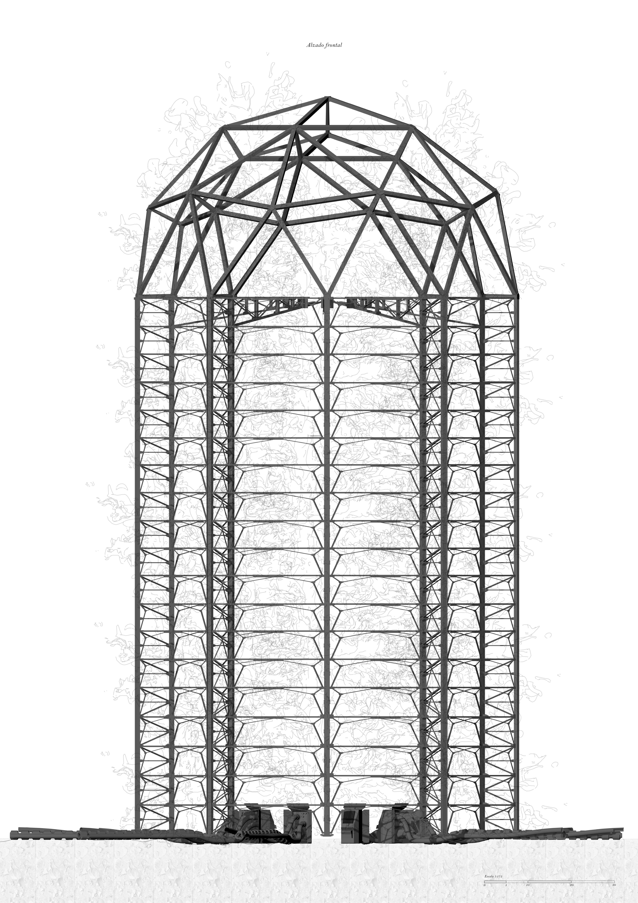
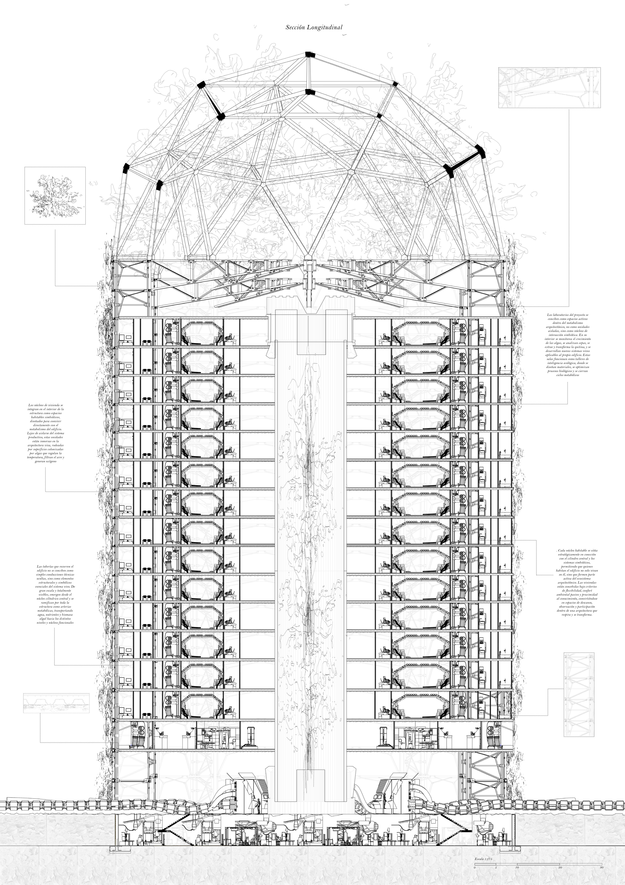
La estructura exterior actúa como un exoesqueleto capaz de soportar tanto las cargas del edificio como el crecimiento progresivo de la biomasa. Cada elemento constructivo responde simultáneamente a necesidades estructurales, ambientales y biológicas.
PANEL FINAL

«La arquitectura ya no termina cuando finaliza la obra. Comienza cuando la vida decide habitarla.»